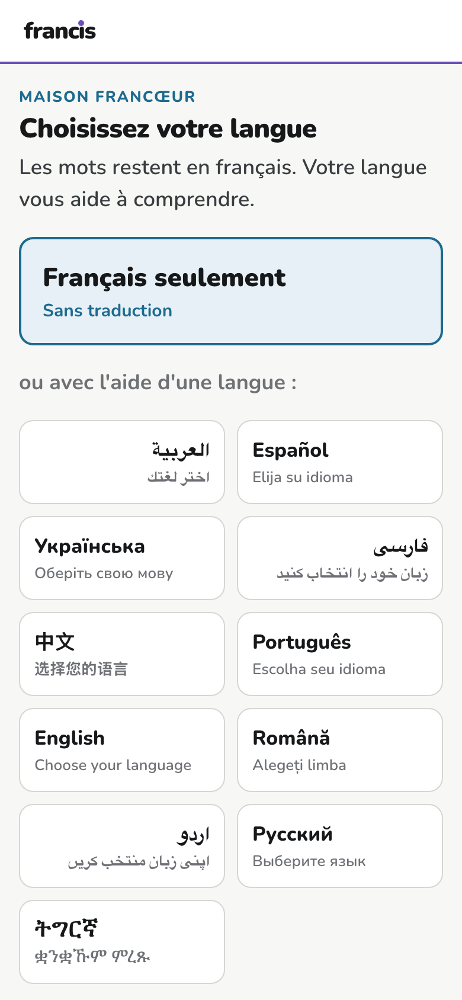
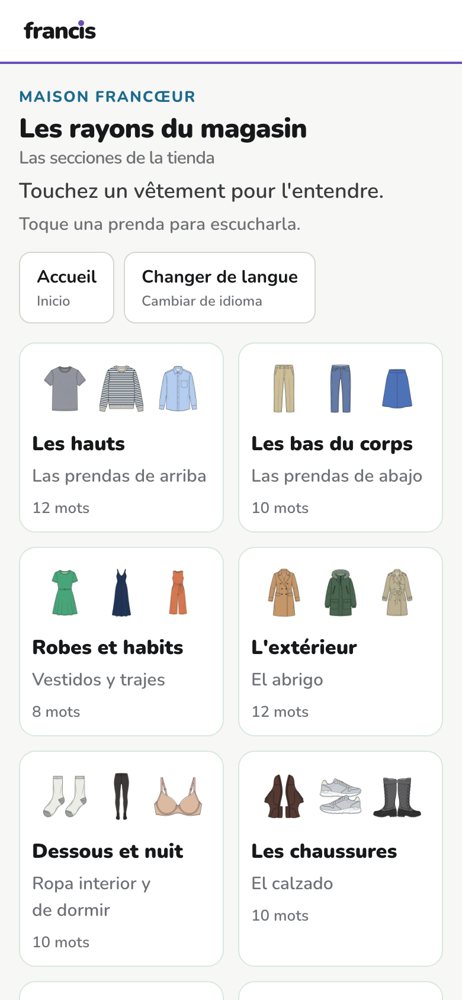
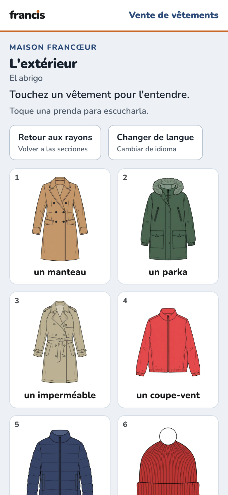
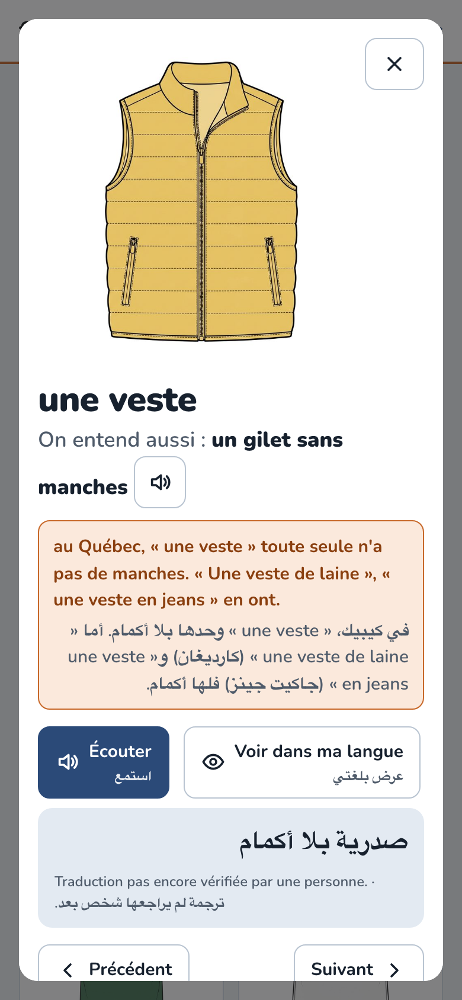
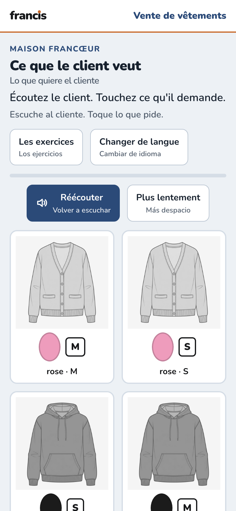
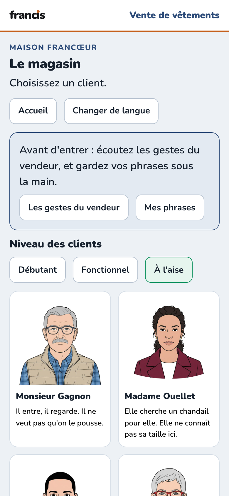

Formation au poste · commerce de détail
Vos employés vendent des vêtements et ne parlent pas encore français. Ce qui leur fait rater une vente, ce n'est pas d'ignorer le mot cardigan : c'est de ne pas comprendre la question du client, dite vite, avec une couleur et une taille dans la même phrase. Cette trousse leur apprend les mots du rayon, puis à comprendre le client — et à dire « un instant, s'il vous plaît ».






Essayer, sans compte :
| Apprendre les mots | 105 croquis de catalogue ; le mot d'ici en tête (« chandail »), l'autre dessous (« pull ») ; huit pièges France-Québec signalés. |
| S'exercer | Sept exercices, dont 28 demandes de clients à vitesse réelle, les consignes de la gérante et « Ce que je réponds ». |
| Voir faire | Cinq dialogues modèles : on entend un vendeur faire chaque geste avant de le faire soi-même. |
| Mesurer | Un test de dix minutes, adaptatif, en deux formes équivalentes : repassé à la fin sur des questions nouvelles, il montre ce qui a été appris, objectif par objectif. |
| Pratiquer | Un jeu de rôle à voix haute ; le visage du client montre l'effet de ce qu'on lui dit, et le bilan dit quels gestes ont été faits. |
| Garder en poche | Une fiche imprimable par langue : six phrases du vendeur, les pièges, les tailles, les couleurs. |
Sur le téléphone de l'employé, par un carré QR : aucun compte à créer, aucune application à installer.
Avec un formateur, qui a son guide : deux à quatre séances de 90 minutes, puis en libre-service.
Sans données personnelles : aucun nom, l'oral reste sur l'appareil. Ce qui remonte est un constat sur le matériel ou sur le groupe, jamais sur une personne (Loi 25).
3 000 à 6 000 $
prix fixePour commencer : un magasin, un petit groupe d'employés.
12 000 à 25 000 $
prix fixePour un autre commerce : chaussures, quincaillerie, épicerie, pharmacie…
2 000 à 5 000 $
par annéePour un réseau ou un partenaire qui la déploie lui-même.
La trousse est construite et jouable. Il lui reste l'épreuve qui compte : un pilote avec un petit groupe de vrais employés, dont nous lirons ce que le matériel fait rater avant de le déclarer terminé. Les traductions sont faites dans les 11 langues et attendent la relecture d'une personne qui parle chacune (0 relue à ce jour). Le premier contrat se construit donc avec vous, sur votre plancher.
La même méthode se transpose à une autre enseigne — chaussures, quincaillerie, épicerie : on change le lexique, les croquis et les clients ; le reste suit.
Page produite par build/francoeur_emballage.py — chaque chiffre est lu dans le contenu.